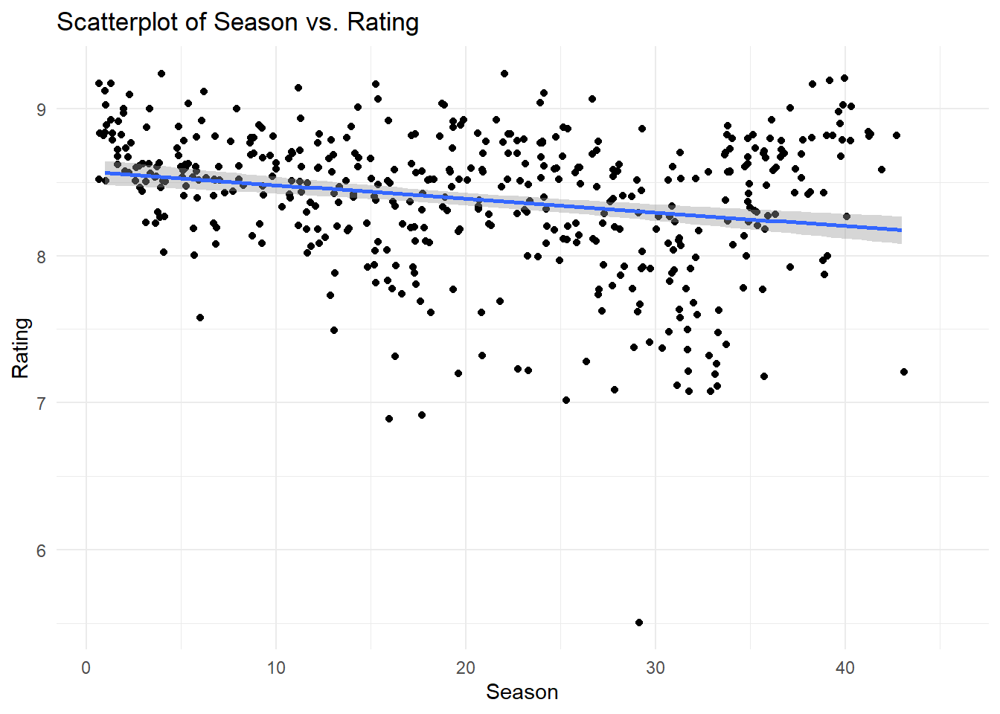
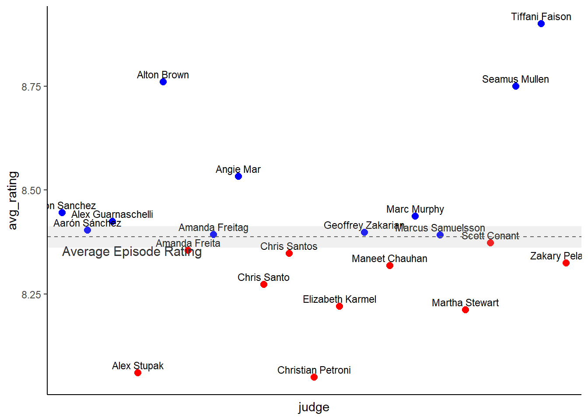

This portfolio project is on the TidyTuesday dataset from august 25th 2020 on the Chopped tv show.
#libraries
library(tidyverse)## Warning: package 'tidyverse' was built under R version 4.4.3## Warning: package 'ggplot2' was built under R version 4.4.3## Warning: package 'purrr' was built under R version 4.4.3## ── Attaching core tidyverse packages ──────────────────────── tidyverse 2.0.0 ──
## ✔ dplyr 1.1.4 ✔ readr 2.1.5
## ✔ forcats 1.0.0 ✔ stringr 1.5.1
## ✔ ggplot2 3.5.2 ✔ tibble 3.2.1
## ✔ lubridate 1.9.4 ✔ tidyr 1.3.1
## ✔ purrr 1.0.4
## ── Conflicts ────────────────────────────────────────── tidyverse_conflicts() ──
## ✖ dplyr::filter() masks stats::filter()
## ✖ dplyr::lag() masks stats::lag()
## ℹ Use the conflicted package (<http://conflicted.r-lib.org/>) to force all conflicts to become errorslibrary(tidytuesdayR)## Warning: package 'tidytuesdayR' was built under R version 4.4.3library(ggplot2)
library(lme4)## Warning: package 'lme4' was built under R version 4.4.3## Loading required package: Matrix
##
## Attaching package: 'Matrix'
##
## The following objects are masked from 'package:tidyr':
##
## expand, pack, unpack#data
chopped <- readr::read_tsv('https://raw.githubusercontent.com/rfordatascience/tidytuesday/main/data/2020/2020-08-25/chopped.tsv')## Rows: 569 Columns: 21
## ── Column specification ────────────────────────────────────────────────────────
## Delimiter: "\t"
## chr (17): episode_name, episode_notes, air_date, judge1, judge2, judge3, app...
## dbl (4): season, season_episode, series_episode, episode_rating
##
## ℹ Use `spec()` to retrieve the full column specification for this data.
## ℹ Specify the column types or set `show_col_types = FALSE` to quiet this message.#long
chopped_long <- chopped %>%
pivot_longer(
cols = starts_with("judge"),
names_to = "judge_position",
values_to = "judge"
) %>%
mutate(judge = as.factor(judge))#exploratory ##seasonrating
chopped %>%
ggplot(aes(x = season, y = episode_rating)) +
geom_jitter(na.rm = TRUE) +
geom_smooth(method = "lm", na.rm = TRUE) +
labs(title = "Scatterplot of Season vs. Rating",
x = "Season",
y = "Rating") +
theme_minimal()## `geom_smooth()` using formula = 'y ~ x'
#exploring judge_combos
chopped_with_combo <- chopped %>%
rowwise() %>%
mutate(
judge_combo = paste(sort(c(judge1, judge2, judge3)), collapse = " + ")
) %>%
ungroup()
combo_ratings <- chopped_with_combo %>%
group_by(judge_combo) %>%
summarize(
avg_rating = mean(episode_rating, na.rm = TRUE),
n_episodes = n()
) %>%
filter(n_episodes >= 2) %>%
arrange(desc(avg_rating))
combo_ratings$judge_combo <- as.factor(combo_ratings$judge_combo)#tryingagain
judge_counts <- chopped_long %>%
group_by(judge) %>%
summarise(episode_count = n()) # Count episodes per judge
# Filter out judges who were in fewer than 3 episodes
chopped_long_filtered <- chopped_long %>%
filter(judge %in% judge_counts$judge[judge_counts$episode_count >= 4])
# Preview the filtered data
head(chopped_long_filtered)## # A tibble: 6 × 20
## season season_episode series_episode episode_rating episode_name episode_notes
## <dbl> <dbl> <dbl> <dbl> <chr> <chr>
## 1 1 1 1 9.2 Octopus, Du… This is the …
## 2 1 1 1 9.2 Octopus, Du… This is the …
## 3 1 1 1 9.2 Octopus, Du… This is the …
## 4 1 2 2 8.8 Tofu, Blueb… This is the …
## 5 1 2 2 8.8 Tofu, Blueb… This is the …
## 6 1 2 2 8.8 Tofu, Blueb… This is the …
## # ℹ 14 more variables: air_date <chr>, appetizer <chr>, entree <chr>,
## # dessert <chr>, contestant1 <chr>, contestant1_info <chr>,
## # contestant2 <chr>, contestant2_info <chr>, contestant3 <chr>,
## # contestant3_info <chr>, contestant4 <chr>, contestant4_info <chr>,
## # judge_position <chr>, judge <fct>model <- lmer(episode_rating ~ judge + (1 | season_episode), data = chopped_long_filtered)
# Summary of the model
summary(model)## Linear mixed model fit by REML ['lmerMod']
## Formula: episode_rating ~ judge + (1 | season_episode)
## Data: chopped_long_filtered
##
## REML criterion at convergence: 1764.3
##
## Scaled residuals:
## Min 1Q Median 3Q Max
## -6.1004 -0.4604 0.2038 0.6738 1.7782
##
## Random effects:
## Groups Name Variance Std.Dev.
## season_episode (Intercept) 0.0003335 0.01826
## Residual 0.2205451 0.46962
## Number of obs: 1300, groups: season_episode, 20
##
## Fixed effects:
## Estimate Std. Error t value
## (Intercept) 8.443177 0.141718 59.577
## judgeAarón Sánchez -0.040081 0.148306 -0.270
## judgeAlex Guarnaschelli -0.018822 0.146007 -0.129
## judgeAlex Stupak -0.377246 0.253434 -1.489
## judgeAlton Brown 0.314824 0.253390 1.242
## judgeAmanda Freita -0.087041 0.176351 -0.494
## judgeAmanda Freitag -0.050394 0.146573 -0.344
## judgeAngie Mar 0.091963 0.306034 0.300
## judgeChris Santo -0.170895 0.154926 -1.103
## judgeChris Santos -0.096317 0.149849 -0.643
## judgeChristian Petroni -0.392673 0.274317 -1.431
## judgeElizabeth Karmel -0.223384 0.253388 -0.882
## judgeGeoffrey Zakarian -0.044973 0.146803 -0.306
## judgeManeet Chauhan -0.126417 0.149299 -0.847
## judgeMarc Murphy -0.006434 0.146530 -0.044
## judgeMarcus Samuelsson -0.050797 0.152987 -0.332
## judgeMartha Stewart -0.228106 0.218315 -1.045
## judgeScott Conant -0.070052 0.146246 -0.479
## judgeSeamus Mullen 0.298364 0.274359 1.087
## judgeTiffani Faison 0.453124 0.274360 1.652
## judgeZakary Pelaccio -0.114955 0.274342 -0.419##
## Correlation matrix not shown by default, as p = 21 > 12.
## Use print(x, correlation=TRUE) or
## vcov(x) if you need it# Calculate average rating for all episodes
x <- chopped_long_filtered$episode_rating
x <- x[!is.na(x)] # remove NAs
n <- length(x)
mean_x <- mean(x)
sd_x <- sd(x)
se_x <- sd_x / sqrt(n)
ci <- qt(0.975, df = n - 1) * se_x # 95% CI
# CI bounds
lower_ci <- mean_x - ci
upper_ci <- mean_x + ci
# Print results
mean_x## [1] 8.387615lower_ci## [1] 8.361981upper_ci## [1] 8.41325average_ratings <- data.frame(
mean_x = mean_x,
lower_ci = lower_ci,
upper_ci = upper_ci
)
# View the data frame
print(average_ratings)## mean_x lower_ci upper_ci
## 1 8.387615 8.361981 8.41325# Calculate average rating for each judge
average_judge_rating <- chopped_long_filtered %>%
group_by(judge) %>%
summarise(avg_rating = mean(episode_rating, na.rm = TRUE))
average_judge_rating$above_average <- ifelse(average_judge_rating$avg_rating > average_ratings$mean_x, "Above", "Below")ggplot(average_judge_rating, aes(x = judge, y = avg_rating, label = judge, color=above_average)) +
geom_point(size = 2.5) + # Plot the points
geom_text(
hjust = 0.5, vjust = -0.5, # Adjust text position (centered horizontally, slightly above the point)
size = 3, color = "black" # Reduce text size and set color
) +
annotate("rect",
xmin = -Inf, xmax = Inf,
ymin = average_ratings$lower_ci, ymax = average_ratings$upper_ci,
alpha = 0.2, fill = "gray70") + # Shaded confidence interval
# Add mean line
geom_hline(yintercept = average_ratings$mean_x, linetype = "dashed", color = "gray40") +
annotate("text", x = 1, y = average_ratings$mean_x + 0.1, label = "Average Episode Rating",
color = "gray20", size = 4, angle = 0, hjust = 0, vjust = 6) +
scale_color_manual(values = c("Above" = "blue", "Below" = "red")) +
theme_classic()+
theme(
axis.text.x = element_blank(), # Remove x-axis labels
axis.ticks.x = element_blank(),
legend.position = "none")